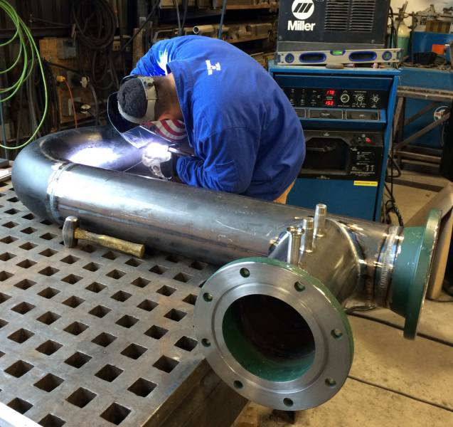
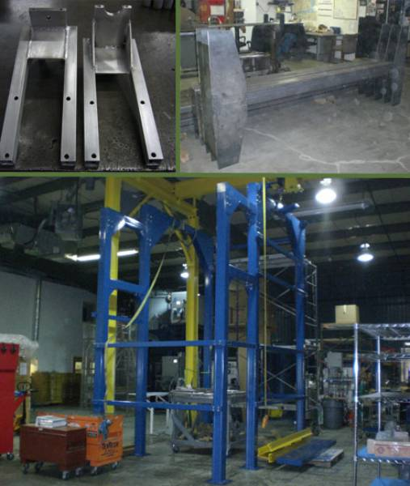
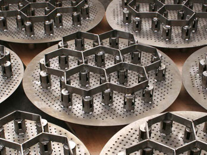
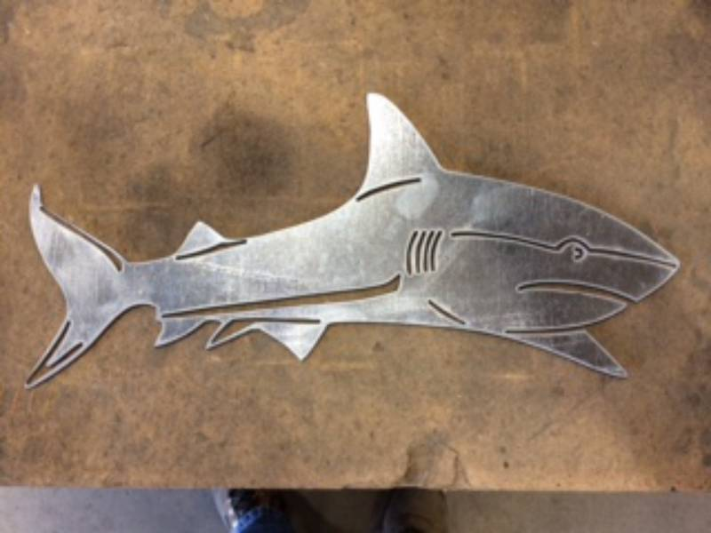

WILMINGTON, MASSACHUSETTS · GREATER BOSTON
01 / 03
WE MAKE
METAL
MATTER.
Precision fabrication for projects where the details, tolerances and performance all count.
CUSTOM FABRICATION / PROCESS SYSTEMS
The toughest projects need more than equipment. They need people who understand the material, the process and what success looks like when the job is done.
Atlantic Steel Fabricators brings together experienced craftsmen, process control and a broad range of metalworking capabilities to take on custom and precision fabrication challenges.
Tell us what you're building ↗One fabrication partner. A wide range of processes. Solutions shaped around your specifications.
From high-tech industrial systems to architectural components, we fabricate for the real conditions our customers work in.
A selection of Atlantic Steel's fabrication work. Every component starts with a requirement and ends with a solution.



Send us your project details. Whether it's a prototype, a custom weldment or a production requirement, we'd welcome the opportunity to take a look.
238 Andover Street, Wilmington, MA 01887